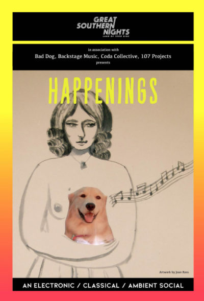

GREAT SOUTHERN NIGHTS: HAPPENINGS
DATE: 28th Nov 2020 - 29th Nov 2020, 3 p.m. - 7 p.m.
SPACE: Joynton Avenue Creative Centre
COST: $40 + BF
An electronic / classical / ambient social.
Unrestricted musical offerings in a time of restricted venues with 2 cabaret-seated undercover social afternoons.
Presenting a curatorial blur between electronica, new classical and ambient music, all wrapped up in a 2 day spring social.
Happenings is a collaboration between Bad Dog, Backstage Music, CODA Collective and 107 Projects.
Presenting a stellar lineup over 2 twilight afternoons, exploring repertoire from the new classical tradition and cross-genre electronica.
JASON NOBLE - clarinets
LAMORNA NIGHTINGALE - flutes
JAMES NIGHTINGALE - saxophones